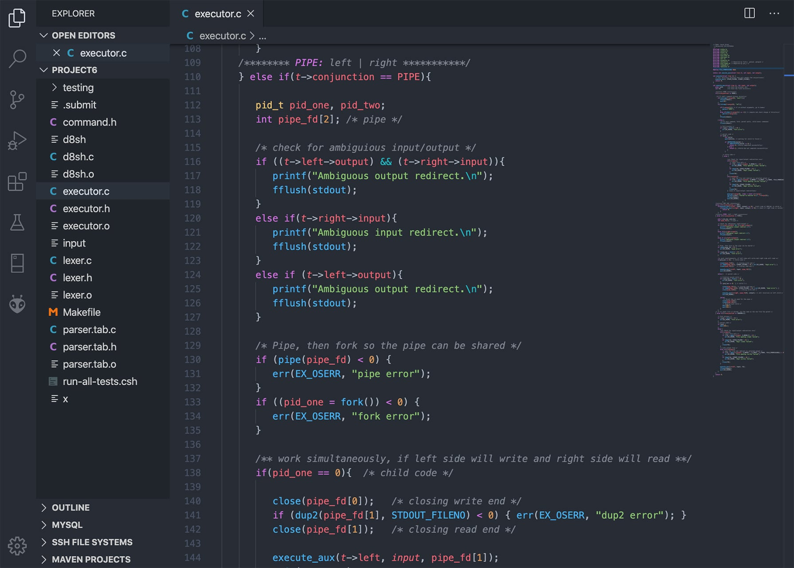
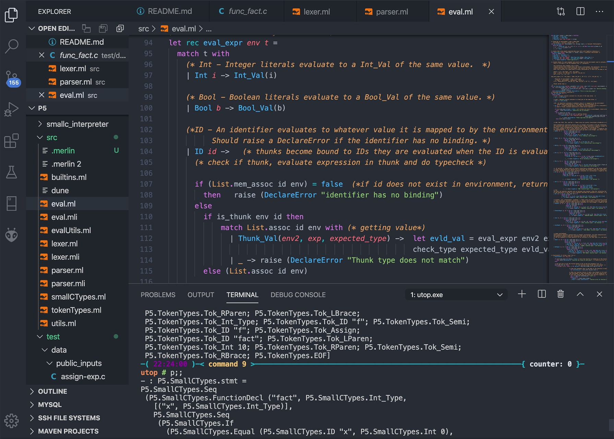
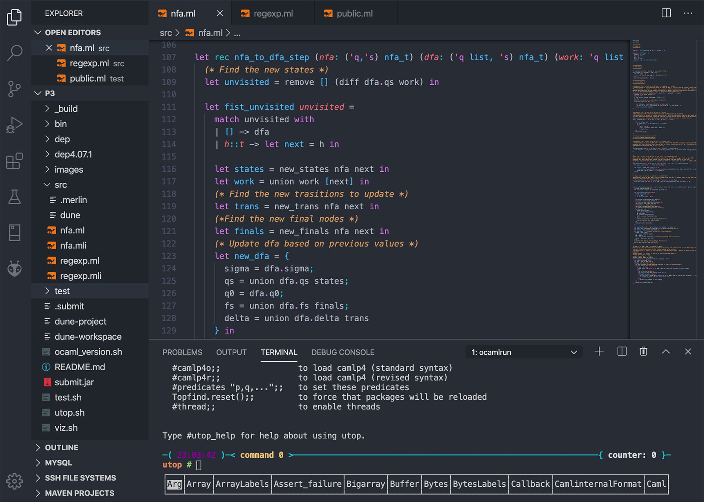
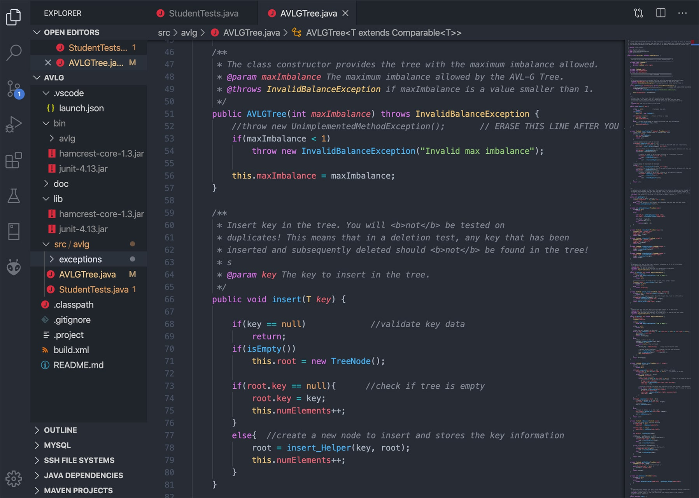

← Back to Projects
Software & Academic Projects
Mobile applications and computer science projects exploring application development, interpreters, data structures, and algorithms.
Mobile Applications
Academic Projects
Coursework projects are preserved here for context. Some source solutions are not publicly available under university policy. About source availability

Coursework
Simple Shell
A command-line interface based on the Unix Bash shell. Supports boolean operations, pipes, and file redirection.
Source code unavailable

Coursework
Small-C Interpreter
Recognizes and runs expressions and statements from an input string.
Source code unavailable

Coursework
Regular Expressions Engine
Handles conversions from nondeterministic finite automata to deterministic finite automata, and from regular expressions to nondeterministic finite automata.
Source code unavailable

Coursework
AVL-G Trees
An AVL tree implementation with a relaxed balance condition. Its constructor accepts a positive parameter that controls the maximum imbalance allowed on a subtree.
Source code unavailable
AVL tree reference